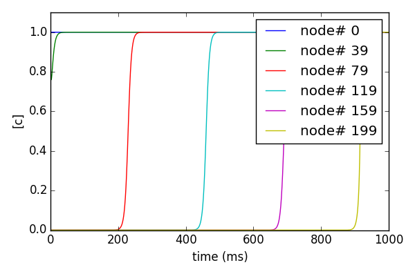

This archive contains NEURON code associated with:
McDougal, R. A., Hines, M. L., & Lytton, W. W. (2013). Reaction-diffusion
in the NEURON simulator. Frontiers in neuroinformatics, 7.
These model files were supplied by Robert A. McDougal.
Files:
bistablewave.py -- The code for the model of Figure 1. The graph in that figure
was made with NEURON's GUI controls.
bistablewave-full-infrastructure.py -- An expanded version of bistablewave.py,
with code for storing state values,
plotting, and more courtesy of Alexandra
Seidenstein.
README.html -- this file
speed.py -- Generates an approximation of Figure 6. Use more alpha values to
match the figure exactly.
Usage:
-----
Running
nrngui bistablewave-full-infrastructure.py
in less than a minute will produce graphs like these:

Running
nrngui speed.py
in a minute or so will generate the following figure: